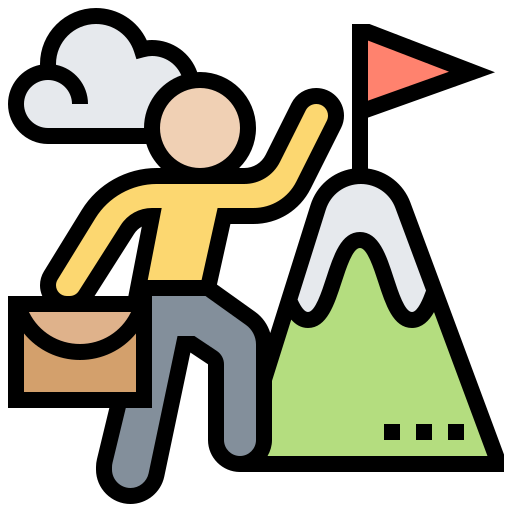

{{'ABOUT.ABOUTUS' | translate}}
{{'ABOUT.ABOUTWE' | translate}}

{{'ABOUT.VIEW' | translate}}
{{'ABOUT.ABOUTVIEWDESCRIPTION' | translate}}

{{'ABOUT.MISSION' | translate}}
{{'ABOUT.ABOUTMISIONDESCRIPTION'|translate}}

{{'ABOUT.CORPORATEVALUES' | translate}}
{{'ABOUT.COMMITMENT' | translate}}{{'ABOUT.COMMITMENT1' | translate}}
{{'ABOUT.LOYALTY' | translate}}{{'ABOUT.LOYALTY1' | translate}}
{{'ABOUT.JUSTICE' | translate}}{{'ABOUT.JUSTICE1' | translate}}
{{'ABOUT.ETHICS' | translate}}{{'ABOUT.ETHICS1' | translate}}